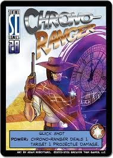
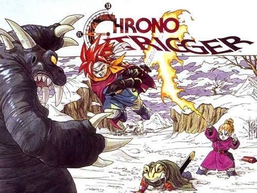

20 posts · 800 views · started 2014-08-08 12:31 UTC
PA
Papabird24
2014-08-08 12:31 UTC
#1
I just recently came into the fold on Sotm and bought the game+expansions. I have been into super heroes for quite some time so I really enjoy the product.
After doing some researching, mostly card references, there is one reference that is very apparent to me but I haven't seen it listed elsewhere (maybe my research skills need work, or maybe it's because I'm late to the party).
it has to deal with the time traveling cowpoke we all love, Chrono-Trigger... I mean Ranger.
but yea. Chrono-Trigger: time travel (to the future, then to the past, then present), the font. He uses a gun, guns have triggers.
if this has been already mentioned in full then ignore me and my babbling, but I just think its odd that http://sotm.wikidot.com/card-references lists OX's Megaman X reference in full and makes no hint of Chrono-Ranger's game reference... Especially because they were both released in the same expansion.
CR
Craig
2014-08-08 12:34 UTC
#2
He's always struck me more as an homage to Roland Deschain from Stephen King's Dark Tower series.
PA
Papabird24
2014-08-08 12:40 UTC
#3
Character can have multiple references. Legacy has danger sense: spider-man but has a very strong superman feel.
I'm not saying Chrono ranger is only based off of Chrono Trigger, because first: what do I know and second: their are a million things wrong with that statment.
I just feel that this reference may have been overlooked and overshadowed.


CR
Craig
2014-08-08 12:46 UTC
#4
Oh, I'm not saying you're wrong.
RA
Rabit
2014-08-08 14:00 UTC
#5
I remember someone making that reference in the past, so I don't think you're the only person to see it.
But yeah, the >G folks have embedded many, many references to things throughout the game, so it wouldn't surprise me in the least.
DA
danmarshall14
2014-08-08 14:21 UTC
#6
That's the feeling I always got as well. And for reasons I won't mention as not to spoil an amazing book series, thematically he fits quite nicely.
CR
Craig
2014-08-08 14:24 UTC
#7
knowing smile
PL
PlatinumWarlock
2014-08-08 15:15 UTC
#8
Ka is a wheel...
GR
Greywind
2014-08-08 22:27 UTC
#9
Time-traveler with a cybernetic arm and uses guns: Cable.
PL
PlatinumWarlock
2014-08-08 22:31 UTC
#10
Cowboy bounty hunting time traveler with a major disfigurement? Jonah Hex.
PH
phantaskippy
2014-08-09 00:16 UTC
#11
Chrono-Ranger always makes me think of the old Doctor Who where they did the gunfight at the OK Corral. It was terrible. Epicly bad.
NI
Nielzabub
2014-08-09 01:10 UTC
#12
Recently finished book seven and so I too will smile somewhat knowingly.
RA
Rabk
2014-08-09 07:37 UTC
#13
So does that mean whomever will become CON is already a member of Jim's Ka-tet now, in this timeline?
PA
Papabird24
2014-08-10 01:16 UTC
#14
Yea, Con's a mystery to me, since Chris said con and haka go waaayy back. The Unitron theory is interesting but it doesn't do it for me.
SP
Spiff
2014-08-10 01:21 UTC
#15
What about the Fixity theory? Still nothing?
PA
Papabird24
2014-08-10 01:38 UTC
#16
Honestly, I don't know that one. I assume its a mr. Fixer/unity concept that plays into the unity promo card. W/o more concept other than my assumption it still kinda falls flat to me (basically, direct me to where I can read about this theory).
I don't have Ambuscade's deck yet (the mini expansions are on their way so I will have all but promos. So Yay, also got my preorder of wrath of the cosmos placed so I'm quite excited) but I think he'd be an interesting concept for con, if plausible.
bare with me here, as it's an idea spawned from a lack of his deck. Ambuscade hunts targets, sometimes for money. I'm sure he has an extensive list of targets he has gathered over the years. Also, he and haka do go back.
i dunno if this thought has already been mentioned before, but that's where my thoughts gravitate too when I think of a future Computer who sets up bounties in the past, a big game hunter/Hitman in the present that isn't above augmenting himself.
MC
McBehrer
2014-08-10 02:22 UTC
#17
That's an interesting concept, but with a couple flaws.
One, Con's manner of speaking is much more like Unity than Ambuscade. Ambuscade is always so serious, and Unity is much more casual.
Also, Ambuscade is one of the bounties; Kill On Sight, actually. Why would he give Chrono-Ranger his own death sentence? Plus he calls him "a hunter like you, yes, but more Monster than Man."
CR
Craig
2014-08-10 02:35 UTC
#18
Also, everyone knows no Frenchman will survive to the end of the world.
PA
Papabird24
2014-08-10 02:53 UTC
#19
Good point, forgot bout the bounty being ambuscade.
I knew con has a distinct manner of speaking. I was waiting on seeing how ambuscade talked before really trying to make the theory work, overlooked the obvious however.
OA
Oaktree
2014-08-10 05:51 UTC
#20
Might have to wait until the Con's Bunker environment deck until things are made clear.